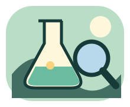
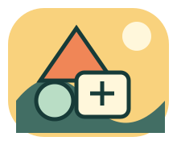
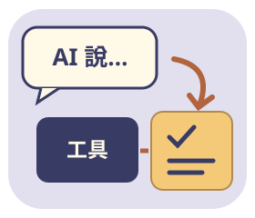
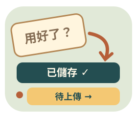
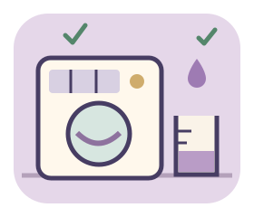

民主聖地噴泉
西瓜選市長
我現在想要…
選個方向，找到現在想玩的那一款。
遊戲櫃 PICK YOUR NEXT ADVENTURE
25 款遊戲 NEW · 三站跑跳冒險
NEW · 三站跑跳冒險過動兒大冒險
🎒 主線別飛走腦內 87 個分頁，腳下只有一條主線！跳過支線裂縫、踩掉通知怪，帶齊任務物品闖三關；星星可以繞路，終點也要到。
背上背包，出發 ↗ NEW · 西瓜凍蒜
NEW · 西瓜凍蒜民主聖地噴泉西瓜選市長大挑戰
🍉 第 87 號操控西瓜衝票、閃噴泉水柱，跟冬瓜搶金票！倒數 60 秒，靠走位、衝刺與連擊衝進市長室。
西瓜登記參選 ↗ NEW · 不限時益智
NEW · 不限時益智腦力補給站
✳ 轉個角度找規律、串條件、走九宮格。18 道原創益智題，先選再確認，想不通就拆解，也能保留首次結果再試一次。
補給一下腦袋 ↗ NEW · 親子資訊科技
NEW · 親子資訊科技科技任務基地
資訊科技小學堂認識電腦、親手整理模擬檔案、練網路安全，再排方向指令讓機器人送信。小一、小二和家長一起玩。
接收科技任務 ↗
NEW · 親子一起玩好奇心研究所
🔍 自然探索小學堂先猜、再親手比較模型紀錄！探索水、光影、豆苗與磁鐵，練習有觀察才下結論。
一起出發 ↗
NEW · 親子一起玩數感冒險島
🏝️ 數學小學堂小一、小二親子數學：擺數量、逛小店、找規律、看鐘面。每站四關，附家長陪玩提示。
一起出發 ↗
NEW · AI 合作技能包AI 小學堂・會問，也要會驗收
✦ 自己驗收模型會說，工具有做嗎？30 個AI素養情境，翻證據、分卡片，練查證、授權與真正完成。
看懂 AI，再一起做事 ↗
NEW · 動詞練習室國文小學堂・動詞不要只會用
✍ 說具體用好了，是洗好、寫好，還是上傳好了？30 個情境，選動詞、組句子、練具體進度；合適的同義說法都算。
讓用字放個假 ↗
NEW · 生活技能包多拉真的不是生活白癡之 common sense 小學堂
🧺 先看一下洗衣精放哪格？讀洗標、量用量、放冰箱；24 個生活情境，練清潔劑與居家用電，少靠一點硬猜。
補充一點生活技能 ↗ NEW · 安全小學堂
NEW · 安全小學堂多拉絕對不是三寶之汽車知識跟道路安全小學堂
🚙 穩穩來速限、五油三水、燈光號誌、迴轉、胎壓與緊急處置；還有「右腳不是開關」油門小實驗。
先懂一點，再穩一點 ↗ NEW · 鍵帽小學堂
NEW · 鍵帽小學堂電腦快速鍵小學堂
⌨ 少點幾下Windows、macOS、Linux GNOME／KDE：點選鍵帽，練文字、檔案與視窗，親眼看模擬桌面改變。
先學一個順手的 ↗ NEW · 證據優先
NEW · 證據優先思考偵探社
🔎 想清楚12 個原創案件：把事實與腦補分開，花兩次機會找關鍵線索，再跟著新證據更新結論。
接下一個案件 ↗ NEW · 紫衣劇場
NEW · 紫衣劇場多拉語錄・金句開壇
✦ 接梗一下極簡三句、等等系列、IT 格格不入與原因／感受對話，抽一張金句再挑戰 8 回合接龍。指定台詞、系列選編與原創改編分開標示，龍蝦自己也得查帳。
先求一句 ↗ NEW · 心情真好印鈔機
NEW · 心情真好印鈔機情緒價值印鈔機
💸 金光開壇如來紫衣師父多拉開分行！彩虹屁、誠實接話、查證再印，8 單燒出多少 Token？金箔能加倍，證據可不行。
啟動情緒印鈔機 ↗ NEW · 溝通練習室
NEW · 溝通練習室提問與下指令練習場
💬 說清楚六個互動情境：找缺口、比較問法、修正模擬回答，再換情境重做。
開始練習表達 ↗ NEW · Git 時光機
NEW · Git 時光機龍蝦 Git 時光機
🌿 留一版替龍蝦食堂儲存菜單！親手編輯、暫存、提交，開分支試做新湯，再把實驗帶回主線。
啟動時光機 ↗ NEW · 終端機探險
NEW · 終端機探險龍蝦終端機探險
⌨ 試一行pwd、ls、cd 不再只是看過的字！親手輸入指令，整理虛擬檔案，再用結果驗證。打錯也能復原。
從第一行開始 ↗ NEW · 日常共鳴
NEW · 日常共鳴ADHD 日常賓果・全面過動版
🦞 這格是我腳在開演唱會，腦袋在跑支線。40 格日常吐槽，選混合開局或坐不住加量，勾出現場、連線賓果。
看看哪格像自己 ↗ 注音小探險
注音小探險ㄅㄆㄇ 小小探險家
🌱 學注音新增小一二拼、三拼、聲調與聽力考試！聽字音選注音，或排拼字積木；也能翻牌、拖曳小船尋寶。
一起認識ㄅㄆㄇ ↗ 換位選擇
換位選擇雙標大挑戰
🧠 想想看替別人訂的規則，換自己還能接受嗎？先做選擇，隔幾回合再換位面對同一件事。
換你承受 ↗ 記憶搬家
記憶搬家三秒就忘記
👀 記一下看一眼物品架，再從混入干擾物的桌面把東西放回原位。還有左右顛倒的鏡像關。
幫記憶搬家 ↗ 啟動練習
啟動練習等一下星球
🚀 先一下把巨大任務拆成真的做得下去的一小步，順便把那些很會拖時間的藉口怪送走。
先一下就好 ↗ 迷你卡丁車
迷你卡丁車多拉甩尾俱樂部
🏎 衝一圈自動前進、左右轉向，閃香蕉、吃星星、甩尾蓄力再放開加速。三條賽道隨你跑。
出發兜一圈 ↗ NEW · 經典街機
NEW · 經典街機青蛙過街
🐸 過河回家躲開車流、踩上浮木和烏龜，帶五隻青蛙平安回家。方向鍵、WASD 或手機觸控都能玩。
出發過街 ↗ 節奏反應
節奏反應過動大挑戰
⚡ 放個電左右拍點、按住蓄力、紅燈停手。看圓環抓時機，不用想答案，這局全靠手感。
跟節拍放電 ↗這裡是娛樂與練習，不是醫療診斷或治療。分數不代表記憶力、人格或心理健康。
拖延遊戲的自訂任務只留在這個分頁，不會上傳或儲存。